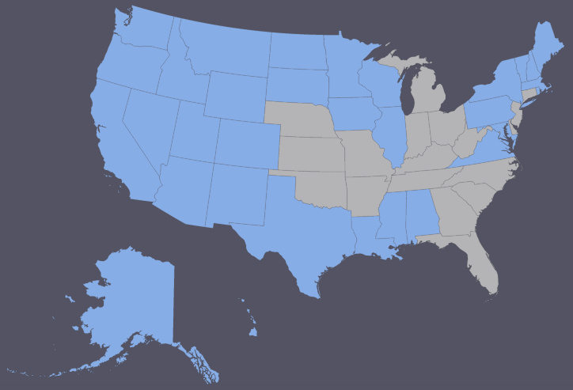

How many states has Molly visited?
Umm...How many states are there, again?
Nope, Molly isn't even close to that well traveled.
Close, but too high!
Close, but too low!
Nope, Molly has been to way more states than that
I didn't understand your answer - try again!
You got it! Molly has visited 32 states.
Molly has 18 states left to visit. Where is she going next?

Possibilities:
- Nebraska
- Michigan
- Indiana
- Ohio
- Kentucky
- Oklahoma
- Kansas
- Missouri
- Arkansas
- Georgia
- Florida
- Tennessee
- South Carolina
- North Carolina
- Connecticut
- West Virginia
- Delaware
- New Jersey